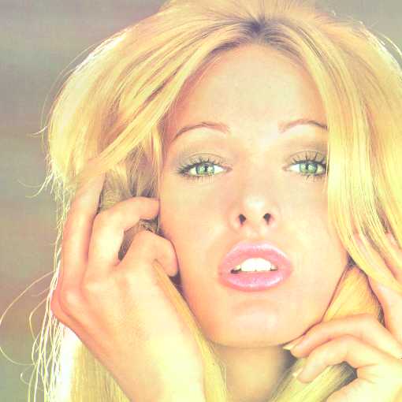
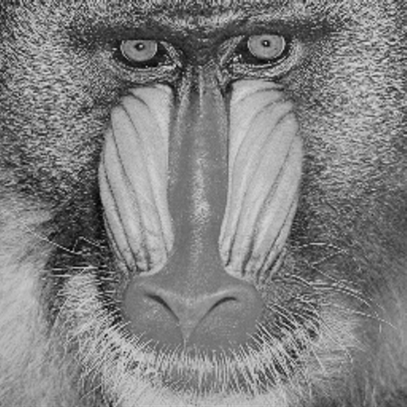
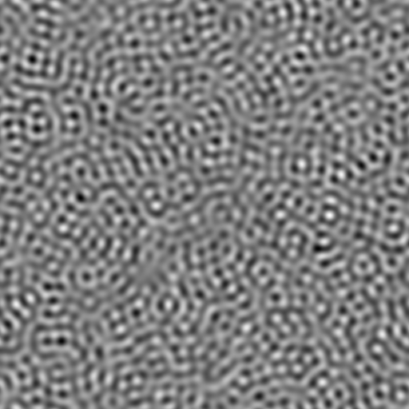
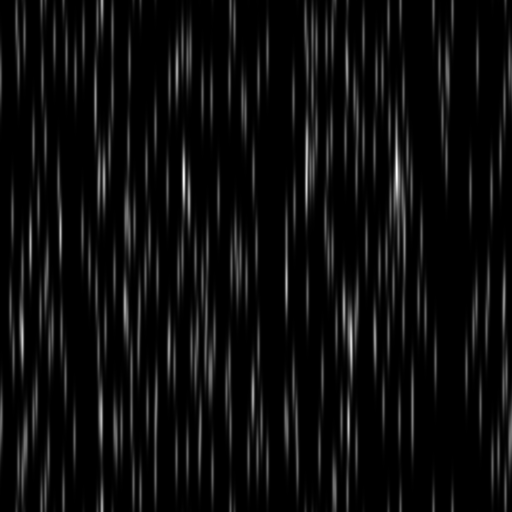
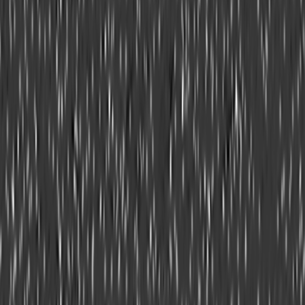

Original image

Noisy image
Examples of applications of VSNR. Download zip here.
%% BLONDE TEST
clear all;close all;
% Initializes the random number generator
rng(2);
% Loads and normalizes image
im=double(imread('Blonde.png'));
im=im/255;
% Adds noisy lines to the image
sigma=0.3;
imb=im;
[nx,ny,m]=size(im);
for i=1:nx
imb(i,:,1)=im(i,:,1)+sigma*randn;
imb(i,:,2)=im(i,:,2)+sigma*randn;
imb(i,:,3)=im(i,:,3)+sigma*randn;
end
% Display
figure(1);image(uint8(255*imb));title('Noisy image')
Original
image
Noisy
image
% Defines the filter (a line)
filter=zeros(size(im));
filter(1,:)=1/size(im,1);
% Denoising algorithm
x=zeros(size(im));
for i=1:3
ub=imb(:,:,i); % Treats every components separately
[y,Gap1,Primal1,Dual1,EstP1,EstD1]=VSNR(ub,0,2,filter,4e-4,1e-3,1000);
x(:,:,i)=y;
end
% Display the result (sometimes she will have a sunburst)
figure(2);image(uint8(255*x));title('Denoised image');
Noisy
image (PSNR = 16,5dB)

Denoised (PSNR = 32,3dB)
%% BABOON TEST
% Load and normalize image.
clear all;close all;
im=double(imread('mandril_gray.tif'))/255;
% Seeds the random number generator (to produce identical experiments each time)
rng(3);
% Generates noise patterns.
% First, an isotropic sinc convolved with Gaussian noise.
[ny,nx]=size(im); % generates a sinc
[X,Y]=meshgrid(linspace(-1,1,nx),linspace(-1,1,ny));
R=100*sqrt(X.^2+Y.^2);
psi1=sin(R)./(R+1e-10);
psi1=1e-2*psi1/max(psi1(:)); % Normalization
b1=randn(size(im)); %Gaussian process
bpsi1=ifft2(fft2(b1).*fft2(psi1)); %convolution of b1 and psi1
%Second, a Gabor function convolved with a Bernoulli process
psi2=gabor_fn(1,pi,0,0,1,0.05); % a Gabor function
psi2=ZeroAdd(psi2,im); %padds with zeros
psi2=1e-2*psi2/max(psi2(:)); %Normalization
b2=rand(size(im)); %generates a Bernoulli process
b2=double(b2>0.999);
bpsi2=ifft2(fft2(b2).*fft2(psi2)); %convolution of b2 with psi2
%Create noisy imagge
imb=im+bpsi1+50*bpsi2;

Original
image

Noisy
%Stores the filters in a single array.
Gabors=zeros(ny,nx,2);
Gabors(:,:,1)=psi1;
Gabors(:,:,2)=psi2;
%% Denoising and display
%Denoises using a primal-dual algorithm.
%Sets parameters
p=[2,1]; %(indexes of p-norms)
alpha=[0.12,0.05]; %data terms.
epsilon = 0; %no regularization of TV-norm
prec= 5e-3; %stopping criterion (initial dual gap multiplied by prec)
C = 1; %ball-diameter to define a restricted duality gap.
%Main algorithm
[u,Gap,Primal,Dual,EstP,EstD]=VSNR(imb,epsilon,p,Gabors,alpha,prec,C);
Original image

Restored image
%Retrieving noise components (EstP contains the estimation of noise processes)
cp1=-ifft2(fft2(EstP(:,:,1)).*fft2(psi1));
cp2=-ifft2(fft2(EstP(:,:,2)).*fft2(psi2));

First component

Retrieved first component

Second component

Retrieved 2nd component
%Displaying the whole
figure(1);colormap gray;imagesc(imb);title('Noisy image')
figure(2);colormap gray;imagesc(u);title('Restored image')
figure(3);colormap gray;imagesc(bpsi1);title('First noise component - real')
figure(4);colormap gray;imagesc(cp1);title('First noise component - estimated')
figure(5);colormap gray;imagesc(bpsi2);title('Second noise component - real')
figure(6);colormap gray;imagesc(cp2);title('Second noise component - estimated')